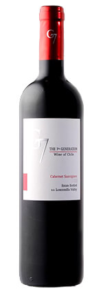
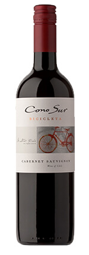
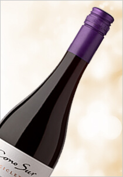
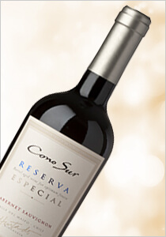
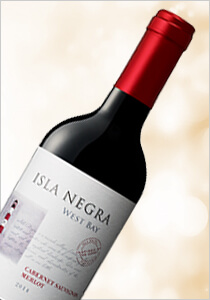

智利 G7 卡本內蘇維濃紅酒
Chile Loncomilla G7 Cabernet-Sauvignon red
價格：$225
產品編號：11-12-02
產品總數：840 瓶
每人限購：42 瓶
地區：Loncomilla
適合搭配：


葡萄品種：卡本內蘇維翁
特色說明：
為Lancomilla谷地之卡本內蘇維濃品種所釀製，深紅寶石光澤，帶有黑莓、黑櫻桃和黑醋栗氣息，絲滑的結構使單寧圓潤。

智利鑑賞家自行車卡本內蘇維翁紅酒
Chile Central Valley Cono Sur Bicicleta Cabernet-Sauvignon red
價格：$398
產品編號：12-09-01
產品總數：120 瓶
每人限購：6 瓶
地區：中央谷地
適合搭配：
葡萄品種：88% 卡本內蘇維翁、3% 梅洛、2% 卡門內里、2% 希哈、2% 馬爾貝克、2%小維鐸、1% 阿里崗特布謝
特色說明：
酒色深紅不透帶黑，嗅有草莓、覆盆子、野莓以及出現在背景的香料調氣息，果香豐美，結構好，酸度均衡，整體顯得優雅可口。適飲溫度：攝氏18度。醒酒時間：15分鐘。

智利鑑賞家自行車黑皮諾紅酒
Chile Maipo Cono Sur Bicicleta Pinot Noir red

智利鑑賞家珍藏卡本內蘇維翁紅酒
Chile Maipo Cono Sur Reserva Cabernet Sauvignon red

智利之星卡本內蘇維翁美洛紅酒
Chile Central Valley Isla Negra Cabernet-sauvignon Merlot red
如欲訂購請洽 0809-036-888 客服專線，並告知產品編號與數量，訂購完成後 2 天 ，請至家樂福天母店出示身分證領取並完成付款。